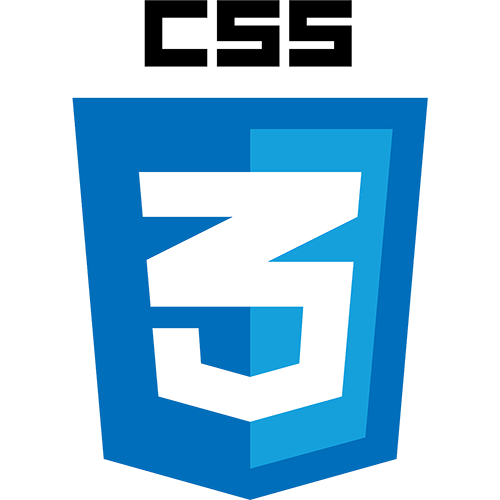

A propos de moi

Julie Gérard
Saint-Quentin
Actuellement, je suis en pleine réorientation professionnelle vers le développement web. Animée par une forte curiosité pour la création numérique, j'ai choisi de me former en autodidacte sur les langages fondamentaux que sont l'HTML, le CSS et le JavaScript. J'ai trouvé une réelle passion dans le développement back et front-end et je souhaite aujourd'hui approfondir mes compétences dans ce domaine. Je suis particulièrement intéressée par la création d'interfaces utilisateur modernes, interactives et inclusives, et je suis prête à m'investir pleinement pour maîtriser les outils et frameworks les plus récents. À long terme, mon objectif est d'élargir mes compétences pour devenir développeuse full-stack, afin de pouvoir gérer à la fois le côté client et le côté serveur d'un site ou d'une application web. Ma motivation, ma soif d'apprendre et ma capacité d'adaptation sont mes principaux atouts pour mener à bien cette transition.
Formation
Les technologies sur lesquelles je me suis formée avec Konexio :
 HTML
HTML

CSS